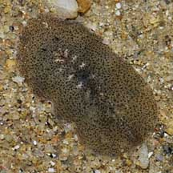
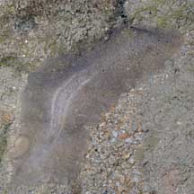
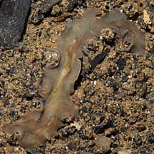
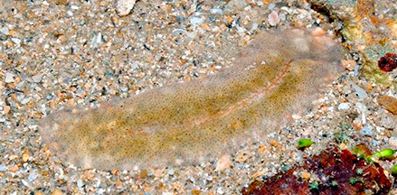

|
|
| flatworms text index | photo index |
| worms > Phylum Platyhelminthes > Class Turbellaria > Order Polycladida |
| Silt
flatworm awaiting identification* Suborder Acotylea updated Mar 2020 Where seen? Resembling mobile snot, this small flatworm is sometimes seen on soft silty shores as well as sandy areas near reefs, sometimes in large numbers. Features: 1.5-4cm. Semi-translucent, pale shades matching the surrounding sand or silt, often with tiny speckles. It moves very rapidly, oozing through little holes in the ground. In some a pair of tiny tentacles can be seen. Some were seen stretched out into a long narrow ribbon, others just little ovals. Grouped in this entry are flatworms of similar shape and size. It is probable that these are different species. |
|
 Stylochid. Pasir Ris Park, Jan 09 |
 Sisters Island, Feb 10 |
 Woodlands, Jul 08 |
*Species are difficult to positively identify without close examination.
On this website, they are grouped by external features for convenience of display.
| Silt flatworms on Singapore shores |
On wildsingapore
flickr
|
| Other sightings on Singapore shores |
 South Pulau Semakau, Aug 14 Photo shared by Loh Kok Sheng on his blog. |
Acknowledgements References
|